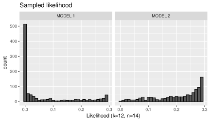
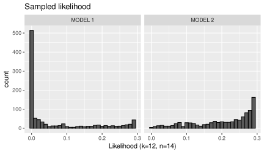

Chapter 12 Introduction to Bayesian hypothesis testing
In this chapter, we will introduce an alternative to the Frequentist null-hypothesis significance testing procedure employed up to now, namely a Bayesian hypothesis testing procedure. Like before, this consists of comparing statistical models. What is new here is that Bayesian models contain a prior distribution for the model parameters. In doing so for both the null and alternative model, Bayesian model comparisons provide a more direct measure of the relative evidence for both the null and alternative hypothesis. We will start with an introduction to the fundamental aspects of Bayesian inference, which concerns a revision of beliefs in light of observed data. We then go on to discuss “default priors” which can be useful in a Bayesian testing procedure. We end with an overview of some objections to the traditional Frequentist method of hypothesis testing, and a comparison between the two approaches.
12.1 Fundamentals of Bayesian inference
12.1.1 Probability in times of Covid
Let’s start with a classic example in a topical guise. As we hopefully move to a new phase in the covid-19 pandemic,26 the UK government plans to employ mass testing as part of a wider strategy also involving vaccination (Guardian, 1 December 2020). The testing will involve lateral flow tests, which are relatively inexpensive and give a result in about 20 minutes. Estimates are that these tests give a positive test result in 76.8% of cases of covid-19, and a negative test result in 99.68% of cases (Department of Health and Social Care, 11 November 2020). The true positive rate (76.8%) is also called the sensitivity of a test, and the true negative rate (99.68%) the specificity. On 26 November, the Office of National Statistics estimates the rate of covid-19 cases in the general population of England to be 1.17%. That implies that about 1 in 85 people carry the virus, which is also called the base rate. Suppose someone is tested and the test result is positive. What is the probability that they are currently infected with covid-19? The probability is not .768. This is the conditional probability \(P(\text{positive test}|\text{covid-19})\). What we would like to know however is a different conditional probability, namely \(P(\text{covid-19}|\text{positive test})\). And these are not the same!
We can work out the desired probability using the rules of probability discussed in Section 2.2.1.1. \[P(\text{covid-19}|\text{positive test}) = \frac{P(\text{covid-19 and positive test})}{P(\text{positive test})}\] From the multiplication rule, we know that \[P(\text{covid-19 and positive test}) = P(\text{positive test}|\text{covid-19}) \times P(\text{covid-19})\] To work out \(P(\text{positive test})\), we need to consider all the ways in which someone can obtain a positive test result. In this situation, there are two: the person can carry covid-19 and have a positive test result, or the person can not carry covid-19 and obtain a positive test result. Thus \[P(\text{positive test}) = P(\text{covid-19 and positive test}) + P(\text{no covid-19 and positive test})\] We have already specified how to calculate \(P(\text{covid-19 and positive test})\). Similarly, we can compute \(P(\text{no covid-19 and positive test})\) as \[P(\text{no covid-19 and positive test}) = P(\text{positive test}|\text{no covid-19}) \times P(\text{no covid-19})\] Now we are in a position to calculate \(P(\text{covid-19}|\text{positive test})\) from the sensitivity and specificity of the test, and the base rate of covid-19 infection. We know that \(P(\text{covid-19}) = .0117\), hence \(P(\text{no covid-19}) = 1 - P(\text{covid-19}) = 1 - .0117 = .9883\). Putting all the numbers in a table:| covid-19 (1.17%) | no covid-19 (98.83%) | |
|---|---|---|
| positive test | 76.8% | 0.32% |
| negative test | 23.2% | 99.68% |
\[\begin{aligned} P(\text{covid-19}|\text{positive test}) &= \frac{P(\text{covid-19 and positive test})}{P(\text{positive test})} \\ &= \frac{P(\text{positive test}|\text{covid-19}) P(\text{covid-19})}{P(\text{pos. test}|\text{covid-19}) P(\text{covid-19}) + P(\text{pos. test}|\text{no covid-19}) P(\text{no covid-19})} \\ &= \frac{.768 \times .0117}{.768 \times .0117 + .0032 \times .9883} \\ &= 0.7396 \end{aligned}\] So just under 3 out of all 4 people that test positive in this scenario would actually carry covid-19. As a result, 1 out of 4 people might be asked to quarantine without really needing to do so. Although of course very unfortunate for those people, that does not seem like a too-high price to pay to me. But the base-rate is very important here. If the rate of covid-19 infections is lowered to \(P(\text{covid-19}) = .001\) (i.e. 0.1%), then the result would be \(P(\text{covid-19}|\text{positive test}) = 0.1937\), which means that only about one in five people who test positive are actually infected by covid-19! When the base-rate is lowered, massive testing seems like a much less useful procedure.
Perhaps the equations seem a little abstract. Another way to explain the resulting conditional probability is through the tree diagram of Figure 12.1. The tree represents a group of 100,000 people from the general population, of which 1,176 would have covid-19, and 903 of these would also get a positive test result. Of the 98,824 people without covid-19, 316 would receive a positive test result. While the change of a false positive is very low, because so many people do not have covid-19, the actual frequency of people without covid-19 who obtain a positive test result is not that much smaller than the number of people with covid-19 who obtain a positive test result. The conditional probability can then be computed simply as \[P(\text{covid-19}|\text{positive test}) = \frac{903}{903 + 316} = .74\] which is equal to the value computed earlier (up to rounding error resulting from converting probabilities to whole people).
Figure 12.1: Outcome tree representing mass testing for covid-19.
12.1.2 Bayes’ rule
In calculating a conditional probability from other conditional probabilities and base-rates, we have just applied the general rules of probability. That’s nothing special, really. In abstract notation, the formula known as Bayes’ rule is
\[\begin{equation} P(A|B) = \frac{P(B|A) P(A)}{P(B|A)P(A) + P(B|\neg A) P(\neg A)} \tag{12.1} \end{equation}\]
Again, there is nothing special about this formula itself, it follows from the rules of probability. These rules were however not clearly specified when Reverend Thomas Bayes defined the rule in an essay which was posthumously published (Bayes, 1763). More importantly, he used the rule to infer an unknown parameter of a statistical model. According to the Frequentist View (see Section 2.2.1), a parameter has a true value, but you cannot assign a probability to it, because it is not a random event that has a long-run frequency. It just has one value: the true value.
In assigning probabilities to parameters, Thomas Bayes can be seen as the founding father of the Subjectivist View of probability. There has been quite a lot of philosophical discussion about probability interpretations. The subjectivist view is that a probability represents a rational degree of belief. This belief can be about anything, whether actual events in the world, or more abstract concepts such as hypotheses or model parameters. Bayesian inference concerns adjusting prior beliefs in light of evidence. The resulting adjusted belief is called the posterior belief. In the previous example, the base-rate of covid-19 infections can be seen as a rational prior belief that a randomly chosen person from the general population in England has covid-19. Upon observing a positive test result, this prior probability \(P(\text{covid-19})\) can be adjusted to become the posterior probability \(P(\text{covid-19}|\text{positive test})\).
12.1.3 We missed you Paul!
In Bayesian statistics, we can apply the principles of Bayesian inference to anything we can assign degrees of belief to. For instance, our belief that Paul the Octopus had psychic abilities. In our general model of Paul’s predictions (Section 2.3, Equation (2.1)), we assumed there was a probability that he made a correct prediction, which we denoted by \(\theta\). This parameter probability could in principle take any value \(0 \leq \theta \leq 1\). The idea of a prior distribution for such a parameter is to assign to each possible value of \(\theta\) a “degree of belief” that this is the true value. These degrees of belief should obey the rules of probability. In the coin-flipping model, which assumed Paul was randomly guessing, there was only one possible value, namely \(\theta=.5\). That means that, if we were to believe this model is true, we would consequently believe that any other value is impossible: \(P(\theta \neq .5) = 0\), which implies \(P(\theta = .5) = 1\). If we don’t believe that Paul is necessarily randomly guessing, then the parameter could have other values as well. Figure 12.2 shows two possible prior distributions. In the plot on the left, the prior assigns an equal probability to any possible value of \(\theta\). This is also called a uniform distribution, and reflects the beliefs of someone who considers that “anything goes” when it comes to Paul’s ability to predict the outcome of football matches. In the plot on the right, the prior distribution reflects the beliefs of someone who quite strongly considers Paul a good predictor of the outcome of football matches.
![Two different prior distributions for the probability that Paul makes a correct prediction, the normalised likelihood function ($P(Y|\theta)/P(Y)$) and the resulting posterior distributions after observing that Paul made $Y=12$ out of $n=14$ correct predictions. Wherever the normalised likelihood is larger than 1, the posterior probability is larger than the prior probability, while the posterior probability is lower than the prior probability wherever the normalised likelihood is lower than 1. Note that in MODEL 1, the normalised likelihood and posterior distribution are identical and therefore overlapping on the plot.](_main_files/figure-html/prior-distributions-Paul-1.svg)
Figure 12.2: Two different prior distributions for the probability that Paul makes a correct prediction, the normalised likelihood function (\(P(Y|\theta)/P(Y)\)) and the resulting posterior distributions after observing that Paul made \(Y=12\) out of \(n=14\) correct predictions. Wherever the normalised likelihood is larger than 1, the posterior probability is larger than the prior probability, while the posterior probability is lower than the prior probability wherever the normalised likelihood is lower than 1. Note that in MODEL 1, the normalised likelihood and posterior distribution are identical and therefore overlapping on the plot.
We can write the posterior distribution for the parameter \(\theta\), conditional upon observed data \(Y\) (e.g., \(Y=12\) out of \(n=14\) correct predictions) as: \[\begin{align} p(\theta|Y) &= \frac{P(Y|\theta) \times p(\theta)}{P(Y)} \\ &= \frac{P(Y|\theta)}{P(Y)} \times p(\theta) \tag{12.2} \end{align}\] Here, \(P(Y|\theta)\) is the likelihood function (the probability of the observed data \(Y\) given a particular value of \(\theta\)), \(p(\theta)\) is the prior distribution of the parameter \(\theta\), and \(P(Y)\) is the probability of the data over all possible values of \(\theta\) (weighted by their prior probability). This is also called the marginal likelihood, and technically is defined as \[P(Y) = \int P(Y|\theta) p(\theta) d \theta\] i.e. as the integral of the product of the likelihood function and prior over all possible values of \(\theta\), but you don’t need to worry about this. The formulation on the second line of Equation (12.2) is just a rearrangement of the terms, but is meant to show that you can think of the posterior probability as the product of the prior probability and the normalised likelihood (the likelihood of the data for a particular value of \(\theta\) compared to the marginal likelihood of \(Y\) over all possible values of \(\theta\)).
In words, we can describe Equation (12.2) as: \[\begin{aligned} \text{posterior} &= \frac{\text{likelihood} \times \text{prior}}{\text{marginal likelihood}} \\ &= \text{normalised likelihood} \times \text{prior} \end{aligned}\] The values of the normalized likelihood and the resulting posterior distribution are also shown in Figure 12.2. Because the posterior probabilities are calculated by multiplying the prior probability by the normalised likelihood, the posterior probability will be higher than the prior probability when the normalised likelihood is larger than 1. You can think of the normalised likelihood as an average likelihood over all possible values of \(\theta\) (we will discuss this in a little more detail soon). So when a particular value of \(\theta\) assigns a higher likelihood to the data than the average likelihood of the data, i.e. \(\frac{P(Y|\theta)}{P(Y)} > 1\), the evidence that this value of \(\theta\) is the true value increases. Conversely, the posterior probability will be lower than than the prior probability when the normalised likelihood is smaller than 1. So when a particular value of \(\theta\) assigns a lower likelihood to the data than average, the evidence that this value of \(\theta\) is the true value decreases. This, in a nutshell, is how Bayesian inference of parameters works.
Inspecting the posterior distributions resulting from the two models in Figure 12.2, you can see that the posterior distribution is mostly located at the higher values of \(\theta\), because small values of \(\theta\) are not very likely given Paul’s success rate of 12 out of 14 correct predictions. Comparing the posterior distributions between the two models, you may also see that the posterior distribution for MODEL 2 is less dispersed (i.e. “narrower”) than for MODEL 1. This is a direct consequence of the difference in the prior distributions. The uniform distribution of MODEL 1 does not make very precise predictions regarding the likely values of \(\theta\) (“anything goes”). The more dispersed the prior is, the more dispersed the posterior will be. The prior distribution of MODEL 2 is, in some sense, much more daring, indicating that low values of \(\theta\) are very unlikely a priori. Because these values are not believed to be true in the first place, they are also relatively less likely after observing the data.
12.1.4 The marginal likelihood and prior predictive distribution
A Bayesian statistical model consists of both the prior distribution and the likelihood function. Both are integral parts of a Bayesian model. This is different from statistical models in the Frequentist tradition, which only focus on the likelihood. One way to view a Bayesian model is as a hierarchical model, similar how linear mixed-effects models can be viewed as hierarchical models. With this formulation, it is straightforward to simulate a Bayesian model, by first sampling a random parameter value from the prior distribution \(p(\theta)\), and then using this to sample a value of the dependent variable from the conditional distribution \(P(Y|\theta)\). The resulting marginal distribution of the dependent variable, \(P(Y)\), is also called the prior predictive distribution. The sampling scheme is \[\begin{align} Y_j &\sim P(Y|\theta_j) \\ \theta_j &\sim p(\theta) \end{align}\] Not only can we use each sampled parameter value \(\theta_j\) to sample a value of the dependent variable, we can also use each to compute the likelihood of the data actually observed, e.g. \(P(Y=12|\theta_j)\). Figure 12.3 shows 1000 samples parameter values (prior samples), corresponding samples of the dependent variable (prior predictive samples), and the likelihood value for Paul’s predictions (sampled likelihood), for both models in Figure 12.2. Note that all these are based on the same set of sampled parameter values \(\theta\).
 

Figure 12.3: Number of correct predictions (out of 14) for 1000 simulations from both Bayesian models of Figure 12.2.
You can see that the prior predictive distribution looks quite similar in shape to the prior distribution, which is because for this model, there is a close link between the probability of a correct prediction (\(\theta\)), and the total number of correct predictions (\(Y\)). You can also see that the likelihood value is relatively low for many sampled parameters from MODEL 1. That is because there are many relatively low sampled values of \(\theta\) in MODEL 1, for which the likelihood of 12 out of 14 correct predictions is low. Model 2 does better in accounting for the observed data, with generally higher likelihood values for the sampled parameters. This better fit to the observed data can also be seen in the prior predictive distribution of MODEL 2, where 12 correct predictions is a common occurrence. In MODEL 1, all numbers of correct predictions are sampled roughly equally often.
The sampled likelihoods can be used to compute an average likelihood for each model. This average is an estimate of the marginal likelihood, and computed simply as \[\hat{P}(Y=12) = \sum_{j=1}^n P(Y|\theta_j)\] Because most of the sampled likelihoods are low for MODEL 1, the average is relatively low as well: \(\hat{P}(Y=12) = 0.0663\). For MODEL 3, most of the sampled likelihoods are relatively high, and hence the average is higher than for MODEL 1: \(\hat{P}(Y=12) = 0.204\). Because MODEL 2 on average assigns a higher probability to the observed data, it offers a better account of the observed data than MODEL 1. As we will see, a Bayesian version of the likelihood ratio called the Bayes factor, which reflects the ratio of marginal likelihoods for models, is central in the Bayesian version of hypothesis testing.
Before we go on to look at the Bayes factor in more detail, I would like to point out a close correspondence between the marginal likelihood and the prior predictive distribution. In fact, the marginal likelihood is just the prior predictive distribution evaluated at the observed data point. The prior predictive distribution is the marginal distribution of the data, whilst the marginal likelihood is the value of this distribution for a particular value of the dependent variable. So we can also estimate the marginal likelihood by computing the relative frequency of \(Y=12\) in the prior predictive distribution. For MODEL 1, this gives \(\hat{P}(Y=12) = 0.076\), and for MODEL 2, it is \(\hat{P}(Y=12) = 0.2\). These two ways of estimating the marginal likelihood are not exactly the same, because they approach the same quantity via a different route.27 And both are subject to random sampling variation due to simulating a limited number of parameter values. Accurately computing marginal likelihoods is, for most models, a rather complicated thing, but we won’t go into the details here.
12.1.5 Hypothesis testing, relative evidence, and the Bayes factor
In the Frequentist null-hypothesis significance testing procedure, we defined a hypothesis test in terms of comparing two nested models, a general MODEL G and a restricted MODEL R which is a special case of MODEL G. Moreover, we defined the testing procedure in terms of determining the probability of a test result, or one more extreme, given that the simpler MODEL R is the true model. This was necessary because MODEL G is too vague to determine the sampling distribution of the test statistic.
By supplying a prior distribution to parameters, Bayesian models can be “vague” whilst not suffering from the problem that they effectively make no predictions. As we saw for the prior predictive distributions in Figure 12.3, even MODEL 1, which assumes all possible values of the parameter \(\theta\) are equally likely, still provides a valid predicted distribution of the data. Because any Bayesian model with a valid prior distribution provides a valid prior predictive distribution, which then also provides a valid value for the marginal likelihood, we do not have to worry about complications that arise when comparing models in the Frequentist tradition, such as that the likelihood of one model will always be higher than the other because we need to estimate an additional parameter by maximum likelihood. The relative marginal likelihood of the data assigned by each model, which can be stated as a marginal likelihood ratio analogous to the likelihood ratio of Chapter 2, provides a direct measure of the relative evidence for both models. The marginal likelihood ratio is also called the Bayes factor, and can be defined for two general Bayesian models as: \[\begin{equation} \text{BF}_{12} = \text{BayesFactor}(\text{MODEL 1}, \text{MODEL 2}) = \frac{P(Y_1,\ldots,Y_n|\text{MODEL 1})}{P(Y_1,\ldots,Y_n|\text{MODEL 2})} \tag{12.3} \end{equation}\] where \(P(Y_1,\ldots,Y_n|\text{MODEL } j)\) denotes the marginal likelihood of observed data \(Y_1,\ldots,Y_n\) according to MODEL \(j\).
The Bayes factor is a central statistic of interest in Bayesian hypothesis testing. It is a direct measure of the relative evidence for two models. Its importance can also be seen when we consider the ratio of the posterior probabilities for two models, which is also called the posterior odds. In a Bayesian framework, we can assign probabilities not just to data and parameters, but also to whole models. These probabilities reflect our belief that a model is “true” in the sense that it provides a better account of the data than other models. Before observing data, we can assign a prior probability \(P(\text{model } j)\) to a model, and we can update this to a posterior probability \(P(\text{model } j|Y_1,\ldots,Y_n)\) after observing data \(Y_1,\ldots,Y_n\). If the marginal likelihood \(P(\text{MODEL 2}|Y_1,\ldots,Y_n)\) is larger than 1, the posterior probability is higher than the prior probability, and hence our belief in the model would increase. If the marginal likelihood is smaller than 1, the posterior probability is lower than the prior probability, and hence our belief in the model would decrease. We can compare the relative change in our belief for two models by considering the posterior odds ratio, which is just the ratio of the posterior probability of two models, and computed by multiplying the ratio of the prior probabilities of the models (the prior odds ratio) by the marginal likelihood ratio: \[\begin{aligned} \frac{P(\text{MODEL 1}|Y_1,\ldots,Y_n)}{P(\text{MODEL 2}|Y_1,\ldots,Y_n)} &= \frac{P(Y_1,\ldots,Y_n|\text{MODEL 1})}{P(Y_1,\ldots,Y_n|\text{MODEL 2})} \times \frac{P(\text{MODEL 1})}{P(\text{MODEL 2})} \\ \text{posterior odds} &= \text{Bayes factor} \times \text{prior odds} \end{aligned}\]
In terms of the relative evidence that the data provides for the two models, the Bayes factor is all that matters, as the prior probabilities do not depend on the data. Moreover, if we assign an equal prior probability to each model, then the prior odds ratio would equal 1, and hence the posterior odds ratio is identical to the Bayes factor.
In a Frequentist framework, we would evaluate the magnitude of the likelihood ratio by considering its place within the sampling distribution under the assumption that one of the models is true. Although in principle we might be able to determine the sampling distribution of the Bayes factor in a similar manner, there is no need. A main reason for going through all this work in the Frequentist procedure was that the models are on unequal footing, with the likelihood ratio always favouring a model with additional parameters. The Bayes Factor does not inherently favour a more general model compared to a restricted one. Hence, we can interpret its value “as is.” The Bayes factor is a continuous measure of relative evidential support, and there is no real need for classifications such as “significant” and “non-significant.” Nevertheless, some guidance in interpreting the magnitude might be useful. One convention is the classification provided by Jeffreys (1939) in Table 12.1. Because small values below 1, when the Bayes factor favours the second model, can be difficult to discern, the table also provides the corresponding values of the logarithm of the Bayes factor (\(\log \text{BF}_{1,2}\)). On a logarithmic scale, any value above 0 favours the first model, and any value below 0 the second one. Moreover, magnitudes above and below 0 can be assigned a similar meaning.
| \(\text{BF}_{1,2}\) | \(\log \text{BF}_{1,2}\) | Interpretation |
|---|---|---|
| > 100 | > 4.61 | Extreme evidence for MODEL 1 |
| 30 – 100 | 3.4 – 4.61 | Very strong evidence for MODEL 1 |
| 10 – 30 | 2.3 – 3.4 | Strong evidence for MODEL 1 |
| 3 – 10 | 1.1 – 2.3 | Moderate evidence for MODEL 1 |
| 1 – 3 | 0 – 1.1 | Anecdotal evidence for MODEL 1 |
| 1 | 0 | No evidence |
| 1/3 – 1 | -1.1 – 0 | Anecdotal evidence for MODEL 2 |
| 1/10 – 1/3 | -2.3 – -1.1 | Moderate evidence for MODEL 2 |
| 1/30 – 1/10 | -3.4 – -2.3 | Strong evidence for MODEL 2 |
| 1/100 – 1/30 | -4.61 – -3.4 | Very strong evidence for MODEL 2 |
| < 1/100 | < -4.61 | Extreme evidence for MODEL 2 |
The Bayes factor is a general measure that can be used to compare any Bayesian models. We do not have to focus on nested models, as we did with null-hypothesis significance testing. But such nested model comparisons are often of interest. For instance, when considering Paul’s psychic abilities, fixing \(\theta = .5\) is a useful model of an octopus without psychic abilities, while a model that allows \(\theta\) to take other values is a useful model of a (somewhat) psychic octopus. For the first model, assigning prior probability to \(\theta\) is simple: the prior probability of \(\theta = .5\) is \(P(\theta = .5) = 1\), and \(P(\theta \neq .5) = 0\). For the second model, we need to consider how likely each possible value of \(\theta\) is. Figure 12.3 shows two choices for this prior distribution, which are both valid representations of the belief that \(\theta\) can be different from .5. These choices will give a different marginal likelihood, and hence a different value of the Bayes factor when comparing them to the restricted null-model
\[\text{MODEL 0}: \theta = .5\] The Bayes factor comparing MODEL 1 to MODEL 0 is
\[\text{BF}_{1,0} = 12.003\] which indicates that the data (12 out of 14 correct predictions) is roughly 12 times as likely under MODEL 1 compared to MODEL 0, which in the classification of Table 12.1 means strong evidence for MODEL 1. For MODEL 2, the Bayes factor is
\[\text{BF}_{2,0} = 36.409\] which indicates that the data is roughly 36 times as likely under MODEL 2 compared to MODEL 0, which would be classified as very strong evidence for MODEL 2. In both cases, the data favours the alternative model to the null model and may be taken as sufficient to reject MODEL 0. However, the strength of the evidence varies with the choice of prior distribution of the alternative model. This is as it should be. A model such as such as MODEL 2, which places stronger belief on higher values of \(\theta\), is more consistent with Paul’s high number of correct predictions.
Bayesian hypothesis testing with Bayes factors is, at it’s heart, a model comparison procedure. Bayesian models consist of a likelihood function and a prior distribution. A different prior distribution means a different model, and therefore a different result of the model comparison. Because there are an infinite number of alternative prior distributions to the one of the null model, there really isn’t a single test of the null hypothesis \(H_0: \theta = .5\). The prior distribution of MODEL 1, where each possible value of \(\theta\) is equally likely, is the Bayesian equivalent of the alternative hypothesis in a null-hypothesis significance testing, and as such might seem a natural default against which to compare the null hypothesis. But there is nothing to force this choice, and other priors are in principle equally valid, as long as they reflect your a priori beliefs about likely values of the parameter. Notice the “a priori” specification in the last sentence: it is vital that the prior distribution is chosen before observing the data. If you choose the a prior distribution to match the data after having looked at it, the procedure loses some of its meaning as a hypothesis test, even if the Bayes factor is still an accurate reflection of the evidential support of the models.
12.2 A Bayesian t-test
As discussed above, Bayesian hypothesis testing concerns comparing models with different prior distributions for model parameters. If one model, the “null model,” restricts a parameter to take a specific value, such as \(\theta = .5\), or \(\mu = 0\), while another model allows the parameter to take different values, we compare a restricted model to a more general one, and hence we can think of the model comparison as a Bayesian equivalent to a null-hypothesis significance test. The prior distribution assigned to the parameter in the more general alternative model will determine the outcome of the test, and hence it is of the utmost importance to choose this sensibly. This, however, is not always easy. Therefore, much work has been conducted to derive sensible default priors to enable researchers to conduct Bayesian hypothesis tests without requiring them to define prior distributions which reflect their own subjective beliefs.
Rouder, Speckman, Sun, Morey, & Iverson (2009) developed a default prior distribution to test whether two groups have a different mean. The test is based on the two-group version of the General Linear Model (e.g. Section 7.2):
\[Y_i = \beta_0 + \beta_1 \times X_{1,i} + \epsilon_i \quad \quad \epsilon_i \sim \textbf{Normal}(0, \sigma_\epsilon)\] where \(X_{1,i}\) is a contrast-coded predictor with the values \(X_{1i} = \pm \tfrac{1}{2}\) for the different groups. Remember that with this contrast code, the slope \(\beta_1\) reflects the difference between the group means, e.g. \(\beta_1 = \mu_1 - \mu_2\), and the intercept represents the grand mean \(\beta_0 = \frac{\mu_1 + \mu_2}{2}\). Testing for group differences involves a test of the following hypotheses:
\[\begin{aligned} H_0\!: & \quad \beta_1 = 0 \\ H_1\!: & \quad \beta_1 \neq 0 \\ \end{aligned}\]
To do this in a Bayesian framework, we need prior distributions for all the model parameters (\(\beta_0\), \(\beta_1\), and \(\sigma\)). Rouder et al. (2009) propose to use so-called uninformative priors for \(\beta_0\) and \(\sigma\) (effectively meaning that for these parameters, “anything goes”). The main consideration is then the prior distribution for \(\beta_1\). Rather than defining a prior distribution for \(\beta_1\) directly, they propose to define a prior distribution for \(\frac{\beta_1}{\sigma}\), which is the difference between the group means divided by the variance of the dependent variable within each group. This is a measure of effect-size and is also known as Cohen’s \(d\):
\[\text{Cohen's } d = \frac{\mu_1 - \mu_2}{\sigma_\epsilon} \quad \left(= \frac{\beta_1}{\sigma_\epsilon}\right)\] Defining the prior distribution for the effect-size is more convenient than defining the prior distribution for the difference between the means, as the latter difference is dependent on the scale of the dependent variable, which makes it difficult to define a general prior distribution suitable for all two-group comparisons. The “default” prior distribution they propose is a so-called scaled Cauchy distribution:
\[\frac{\beta_1}{\sigma_\epsilon} \sim \mathbf{Cauchy}(r)\] The Cauchy distribution is identical to a t-distribution with one degree of freedom (\(\text{df} = 1\)). The scaling factor \(r\) can be used to change the width of the distribution, so that either smaller or larger effect sizes become more probable. Examples of the distribution, with three common values for the scaling factor \(r\) (“medium”: \(r = \frac{\sqrt{2}}{2}\), “wide”: \(r = 1\), and “ultrawide”: \(r = \sqrt{2}\)), are depicted in Figure 12.4.
Figure 12.4: Scaled Cauchy prior distributions on the effect size \(\frac{\beta_1}{\sigma_\epsilon}\)
Rouder et al. (2009) call the combination of the priors for the effect size and error variance the Jeffreys-Zellner-Siow prior (JZS prior). The “default” Bayesian t-test is to compare the model with these priors to one which assumes \(\beta_1 = 0\), i.e. a model with a prior \(P(\beta_1 = 0) = 1\) and \(P(\beta_1 \neq 0) = 0\), whilst using the same prior distributions for the other parameters (\(\beta_0\) and \(\sigma_\epsilon\)).
As an example, we can apply the Bayesian t-test to the data from the Tetris study analysed in Chapter 7. Comparing the Tetris+Reactivation condition to the Reactivation-Only condition, and setting the scale of the prior distribution for the effects size in the alternative MODEL 1 to \(r=1\), provides a Bayes factor comparing the alternative hypothesis \(H_1\) (\(\beta \neq 0\)) to the null-hypothesis \(H_0\) (\(\beta_1 = 0\)) of \(\text{BF}_{1,0} = 17.225\), which can be interpreted as strong evidence against the null hypothesis.
As we indicated earlier, the value of the Bayes factor depends on the prior distribution for the tested parameter in the model representing the alternative hypothesis. This dependence is shown in Figure 12.5 by varying the scaling factor \(r\).
Figure 12.5: Bayes factor \(\text{BF}_{1,0}\) testing equivalence of the means of the Tetris+Reactivation and Reactivation-Only conditions for different values of the scaling factor \(r\) of the scaled Cauchy distribution.
As this figure shows, the Bayes factor is small for values of \(r\) close to 0. The lower the value of \(r\), the less wide the resulting Cauchy distribution becomes. In the limit, as \(r\) reaches 0, the prior distribution in the alternative model becomes the same as that of the null model (i.e., assigning only probability to the value \(\beta_1 = 0\)). This makes the models indistinguishable, and the Bayes factor would be 1, regardless of the data. As \(r\) increases in value, we see that the Bayes factor quickly rises, showing support for the alternative model. For this data, the Bayes factor is largest for a scaling factor just below \(r=1\). When the prior distribution becomes wider than this, the Bayes factor decreases again. This is because the prior distribution then effectively assigns too much probability to high values of the effect size, and as a result lower probability to small and medium values of the effect size. At some point, the probability assigned to the effect size in the data becomes so low, that the null model will provide a better account of the data than the alternative model. A plot like the one in Figure 12.5 is useful to inspect the robustness of a test result to the specification of the prior distribution. In this case, the Bayes factor shows strong evidence (\(\text{BF}_{1,0} > 10\)) for a wide range of sensible values of \(r\), and hence one might consider the test result quite robust. You should not use a plot like this to determine the “optimal” choice of the prior distribution (i.e. the one with the highest Bayes factor). If you did this, then the prior distribution would depend on the data, which is sometimes referred to as “double-dipping.” You would then end up with similar issues as in Frequentist hypothesis testing, where substituting an unknown parameter with a maximum likelihood estimate biases the likelihood ratio to favour the alternative hypothesis, which we then needed to correct for by considering the sampling distribution of the likelihood ratio statistic under the assumption that the null hypothesis is true. A nice thing about Bayes factors is that we do not need to worry about such complications. But that changes if you try to “optimise” a prior distribution by looking at the data.
12.3 Bayes factors for General Linear Models
The suggested default prior distributions can be generalized straightforwardly to more complex versions of the General Linear Model, such as multiple regression (Liang, Paulo, Molina, Clyde, & Berger, 2008) and ANOVA models (Rouder, Morey, Speckman, & Province, 2012), by specifying analogous JZS prior distributions over all parameters. This provides a means to test each parameter in a model individually, as well as computing omnibus tests by comparing a general model to one where the prior distribution allows only a single value (i.e. \(\beta_j = 0\)) for multiple parameters.
Table 12.2 shows the results of a Bayesian equivalent to the moderated regression model discussed in Section 6.1.5. The results generally confirm the results of the frequenist tests employed there, although evidence for the interaction between fun and intelligence can be classified as “anecdotal.”| effect | BF |
|---|---|
| \(\texttt{attr}\) | > 1000 |
| \(\texttt{intel}\) | > 1000 |
| \(\texttt{fun}\) | > 1000 |
| \(\texttt{attr} \times \texttt{intel}\) | 37.46 |
| \(\texttt{fun} \times \texttt{intel}\) | 2.05 |
Table 12.3 shows the Bayesian equivalent of the factorial ANOVA reported in Section 8.2.1. The results show “extreme” evidence for an effect of experimenter belief, and no evidence for an effect of power prime, nor for an interaction between power prime and experimenter belief. In the Frequentist null-hypothesis significance test, the absence of a significant test result can not be taken as direct evidence for the null hypothesis. There is actually no straightforward way to quantify the evidence for the null hypothesis in a Frequentist framework. This is not so for the Bayesian hypothesis tests. Indeed, the Bayes factor directly quantifies the relative evidence for either the alternative or null hypothesis. Hence, we find “moderate” evidence that the null hypothesis is true for power prime, and for the interaction between power prime and experimenter belief. This ability to quantify evidence both for and against the null hypothesis is one of the major benefits of a Bayesian hypothesis testing procedure.
| effect | BF |
|---|---|
| \(\texttt{P}\) | 0.127 |
| \(\texttt{B}\) | 537.743 |
| \(\texttt{P} \times \texttt{B}\) | 0.216 |
12.4 Some objections to null-hypothesis significance testing
Above, we have presented a Bayesian alternative to the traditional Frequentist null-hypothesis significance testing (NHST) procedure. While still the dominant method of statistical inference in psychology, the appropriateness of the NHST has been hotly debated almost since its inception (Cohen, 1994; Nickerson, 2000; Wagenmakers, 2007). One issue is that a significant test result is not the same as a “theoretical” or “practical” significance. For a given true effect not equal to 0, the (expected) \(p\)-value becomes smaller and smaller as the sample size increases, because of the increased power in detecting that effect. As a result, even the smallest effect size will become significant for a sufficiently large sample size. For example, a medicine might result in a significant decrease of a symptom compared to a placebo, even if the effect is hardly noticeable to the patient. I should point out that this is more an issue with testing a “point” null hypothesis (e.g. the hypothesis that the effect is exactly equal to 0), rather than an issue with the Frequentist procedure per se. It is an important limitation of null hypothesis testing procedures in general. A similar objection to these hypotheses is that the null hypothesis is unlikely to ever be exactly true. Thompson (1992) states the potential issues strongly as:
Statistical significance testing can involve a tautological logic in which tired researchers, having collected data on hundreds of subjects, then, conduct a statistical test to evaluate whether there were a lot of subjects, which the researchers already know, because they collected the data and know they are tired. This tautology has created considerable damage as regards the cumulation of knowledge. (Thompson, 1992, p. 436)
There are other objections, which I will go into in the following sections.
12.4.1 The \(p\)-value is not a proper measure of evidential support
It is common practice to interpret the magnitude of the \(p\)-value as an indication of the strength of the evidence against the null hypothesis. That is, a smaller \(p\)-value is taken to indicate stronger evidence against the null hypothesis than a larger \(p\)-value. Indeed, Fisher himself seems to have subscribed to this view (Wagenmakers, 2007). While it is true that the magnitude is often correlated with the strength of evidence, there are some tricky issues regarding this. If a \(p\)-value were a “proper” measure of evidential support, then if two experiments provide the same \(p\)-value, they should provide the same support against the null hypothesis. But what if the first experiment had a sample size of 10, and the second a sample size of 10,000? Would a \(p\)-value of say \(p=.04\) indicate the same evidence against the null-hypothesis? The general consensus is that sample size is an important consideration in the interpretation of the \(p\)-value, although not always for the same reason. On the one hand, many researchers argue that the \(p\)-value of the larger study provides stronger evidence, possibly because the significant result in the larger study might be less likely due to random sample variability (see e.g. Rosenthal & Gaito, 1963). On the other hand, it can be argued that the smaller study actually provides stronger evidence, because to obtain the same \(p\)-value, the effect size must be larger in the smaller study. Bayesian analysis suggests the latter interpretation is the correct one (Wagenmakers, 2007). That the same \(p\)-value can indicate a different strength of evidence means that the \(p\)-value does not directly reflect evidential support (at least not without considering the sample size).
Another thing worth pointing out is that, if the null hypothesis is true, any \(p\)-value is equally likely. This is by definition. Remember that the \(p\)-value is defined as the probability of obtaining the same test statistic, or one more extreme, assuming the null-hypothesis is true. A \(p\)-value of say \(p=.04\) indicates that you would expect to find an equal or more extreme value of the test statistic in 4% of all possible replications of the experiment. Conversely, in 4% of all replications would you obtain a \(p\)-value of \(p \leq .04\). For a \(p\)-value of \(p=.1\), you would expect to find a similar or smaller \(p\)-value in 10% of all replications of the experiment. The only distribution for which this relation between the value (\(p\)) and the probability of obtaining a value equal-or-smaller than it \(P(p-\text{value} \leq p)\), is the uniform distribution. So, when the null hypothesis is true, there is no reason to expect a large \(p\)-value, because every \(p\)-value is equally likely. When the null hypothesis is false, smaller \(p\)-values are more likely than higher \(p\)-values, especially as the sample size increases. This is show by simulation for a one-sample t-test in Figure 12.6. Under the null hypothesis (left plot), the distribution of the \(p\)-values is uniform.
Figure 12.6: Distribution of \(p\)-values for 10,000 simulations of a one-sample \(t\)-test. \(\delta = \frac{\mu - \mu_0}{\sigma}\) refers to the effect size. Under the null hypothesis (left plot; \(\delta = 0\)) the distribution of the \(p\)-values is uniform. When the null-hypothesis is false (\(\delta = .3\)), the distribution is skewed, with smaller \(p\)-values being more probable, especially when the sample size is larger (compare the middle plot with \(n=10\) to the right-hand plot with \(n=50\)).
12.4.2 The \(p\)-value depends on researcher intentions
The sampling distribution of a test statistic is the distribution of the values of the statistic calculated for an infinite number of datasets produced by the same Data Generating Process (DGP). The DGP includes all the relevant factors that affect the data, including not only characteristics of the population under study, but also characteristics of the study, such as whether participants were randomly sampled, how many participants were included, which measurement tools were used, etc. Choices such as when to stop collecting data are part of the study design. That means that the same data can have a different \(p\)-value, depending on whether the sample size was fixed a priori, or whether sampling continued until some criterion was reached. The following story, paraphrased from (Berger & Wolpert, 1988, pp. 30–33), may highlight the issue:
A scientist has obtained 100 independent observations that are assumed be Normal-distributed with mean \(\mu\) and standard deviation \(\sigma\). In order to test the null hypothesis that \(\mu=0\), the scientist consults a Frequentist statistician. The mean of the observations is \(\overline{Y} = 0.2\), and the sample standard deviation is \(S_Y=1\), hence the \(p\)-value is \(p = .0482\), which is a little lower than than the adopted significance level of \(\alpha.05\). This leads to a rejection of the null hypothesis, and a happy scientist. However, the statistician decides to probe deeper and asks the scientist what he would have done in case that the experiment had not yielded a significant result after 100 observations. The scientist replies he would have collected another 100 observations. As such, the implicit sampling plan was not to collect \(n=100\) observation and stop, but rather to first take 100 observations and check whether \(p <.05\), and collect another 100 observations (resulting in \(n=200\)) if not. This is a so-called sequential testing procedure, and requires a different treatment than a fixed-sampling procedure. In controlling the Type 1 error of the procedure as a whole, one would need to consider the possible results after \(n=100\) observations, but also after \(n=200\) observations, which is possible, but not straightforward, as the results of after \(n=100\) are dependent on the results after \(n=100\) observations. But the clever statistician works it out and then convinces the scientist that the appropriate p-value for this sequential testing procedure is no longer significant. The puzzled and disappointed scientist leaves to collect another 100 observations. After lots of hard work, the scientist returns, and the statistician computes a \(p\)-value for the new data, which is now significant. Just to make sure the sampling plan is appropriately reflected in the calculation, the statistician asks what the scientist would have done if the result would not have been significant at this point. The scientist answers “This would depend on the status of my funding; If my grant is renewed, I would test another 100 observations. If my grant is not renewed, I would have had to stop the experiment. Not that this matters, of course, because the data were significant anyway.” The statistician then explains that the correct inference depends on the grant renewal; if the grant is not renewed, the sampling plan stands and no correction is necessary. But if the grant is renewed, the scientist could have collected more data, which calls for a further correction, similar to the first one. The annoyed scientist then leaves and resolves to never again share with the statistician her hypothetical research intentions.
What this story shows is that in considering infinite possible repetitions of a study, everything about the study that might lead to variations in the results should be taken into account. This includes a scientists’ decisions made during each hypothetical replication of the study. As such, the interpretation of the data at hand (i.e., whether the hypothesis test is significant or not significant) depends on hypothetical decisions in situations that did not actually occur. If exactly the same data had been collected by a scientist who would have not have collected more observations, regardless of the outcome of the first test, then the result would have been judged significant. So the same data can provide different evidence. This does not mean the Frequentist NHST is inconsistent. The procedure “does what it says on the tin,” namely providing a bound on the rate of Type 2 errors in decisions, when the null hypothesis is true. In considering the accuracy of the decision procedure, we need to consider all situations in which a decision might be made in the context of a given study. This means considering the full design of the study, including the sampling plan, as well as, to some extent, the analysis plan. For instance, if you were to “explore” the data, trying out different ways to analyse the data, by e.g. including or excluding potential covariates and applying different criteria to excluding participants or their responses until you obtain a significant test result for an effect of interest, then the significance level \(\alpha\) for that test needs to be adjusted to account for such a fishing expedition. This fishing expedition is also called p-hacking (Simmons, Nelson, & Simonsohn, 2011) and there really isn’t a suitable correction for it. Although corrections for multiple comparisons exist, which allow you to test all possible comparisons within a single model (e.g. the Scheffé correction), when you go on to consider different models, and different subsets of the data to apply that model to, all bets are off. This, simply put, is just really bad scientific practice. And it would render the \(p\)-value meaningless.
12.4.3 Results of a NHST are often misinterpreted
I have said it before, and I will say it again: the \(p\)-value is the probability of observing a particular value of a test statistic, or one more extreme, given that the null-hypothesis is true. This is the proper, and only, interpretation of the \(p\)-value. It is a tricky one, to be sure, and the meaning of the \(p\)-value is often misunderstood. Some common misconceptions (see e.g., Nickerson, 2000) are:
- The \(p\)-value is the probability that the null-hypothesis is true, given the data, i.e. \(p = P(H_0|\text{data})\). This posterior probability can be calculated in a Bayesian framework, but not in a Frequentist one.
- One minus the \(p\)-value is the probability that the alternative hypothesis is true, given the data, i.e. \(1-p = P(H_1|\text{data})\). Again, the posterior probability of the alternative hypothesis can be obtained in a Bayesian framework, when the alternative hypothesis is properly defined by a suitable prior distribution. In the conventional Frequentist NHST, the alternative hypothesis is so poorly defined, that it can’t be assigned any probability (apart from perhaps \(P(H_1) = P(H_1|\text{data}) = 1\), which does not depend on the data, and just reflects that e.g. \(-\infty \leq \mu - \mu_0 \leq \infty\) will have some value).
- The \(p\)-value is the probability that the results were due to random chance. If you take a statistical model seriously, then all results are, to some extent, due to random chance. Trying to work out the probability that something is a probability seems a rather pointless exercise (if you want to know the answer, it is 1. It would have been more fun if the answer was 42, but alas, the scale of probabilities does not allow this particular answer).
Misinterpretations of \(p\)-values are mistakes by practitioners, and do not indicate a problem with NHST itself. However, it does point to a mismatch between what the procedure provides, and what the practitioner would like the procedure to provide. If one desires to know the probability that the null hypothesis is true, or the probability that the alternative hypothesis is true, than one has to use a Bayesian procedure. Unless you consider a wider context, where the truth of hypotheses can be sampled from a distribution, then there is no “long-run frequency” for the truth of hypotheses, and hence no Frequentist definition of that probability.
12.5 To Bayes or not to Bayes? A pragmatic view
At this point, you might feel slightly annoyed. Perhaps even very annoyed. We have spent all the preceding chapters focusing on the Frequentist null hypothesis significance testing procedure, and after all that work I’m informing you of these issues. Why? Was all that work for nothing?
No, obviously not. Although much of the criticism regarding the NHST is appropriate, as long as you understand what it does and apply the procedure properly, there is no need to abandon it. The NHST is designed to limit the rate of Type 1 errors (rejecting the null hypothesis when it is true). It does this well. And, when using the appropriate test statistic, in the most powerful way possible. Limiting Type 1 errors is, whilst modest, a reasonable concern in scientific practice. The Bayesian alternative allows you to do more, such as evaluate the relative evidence for and against the null hypothesis, and even calculate the posterior probability of both (as long as you are willing to assign a prior probability to both as well).
An advantage of the NHST is its “objectiveness”: once you have determined a suitable distribution of the data, and decided on a particular value for a parameter to test, there are no other decisions to make apart from setting the significance level of the test. In the Bayesian hypothesis testing procedure, you also need to specify a prior distribution for the parameter of interest in the alternative hypothesis. Although considering what parameter values you would expect if the null hypothesis were false is an inherently important consideration, it is often not straightforward when you start a research project, or rely on measures you have not used before in a particular context. Although much work has been devoted to deriving sensible “default priors,” I don’t believe there is a sensible objective prior applicable to all situations. Given a freedom to choose a prior distribution for the alternative hypothesis, this makes the Bayesian testing procedure inherently subjective. This is perfectly in keeping with the subjectivist interpretation of probability as the rational belief of an agent endowed with (subjective) prior beliefs. Moreover, at some point, if you were to accumulate all data, the effect of prior beliefs “washes out” (as long as you don’t assign a probability of zero to the true parameter value).
My pragmatic answer to the question whether you should use a Bayesian test or a Frequentist one is then the following: if you can define a suitable prior distribution to reflect what you expect to observe in a study, before you actually conduct that study, then use a Bayesian testing procedure. This will allow you to do what you most likely would like to do, namely quantify the evidence for your hypotheses against alternative hypotheses. If you are unable to form any expectations regarding the effects within your study, you probably should consider a traditional NHST to assess whether there is an indication of any effect, and limiting your Type 1 error rate in doing so. In some sense, this is a “last resort,” but in psychology, where quantitative predictions are inherently difficult, something I reluctantly have to rely on quite frequently. Instead of a hypothesis test, you could also consider simply estimating the effect in that case, with a suitable confidence bound (the Bayesian alternative to this is called a “credible interval,” which is an interval defined for the posterior distribution of a parameter, but we won’t go into the details of this here).
12.6 “Summary”

Figure 12.7: ‘Piled Higher and Deeper’ by Jorge Cham www.phdcomics.com. Source: https://phdcomics.com/comics/archive.php?comicid=905